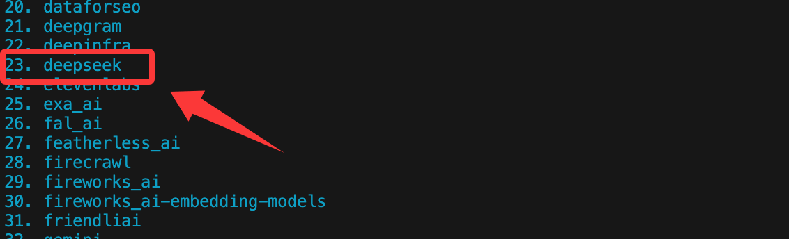
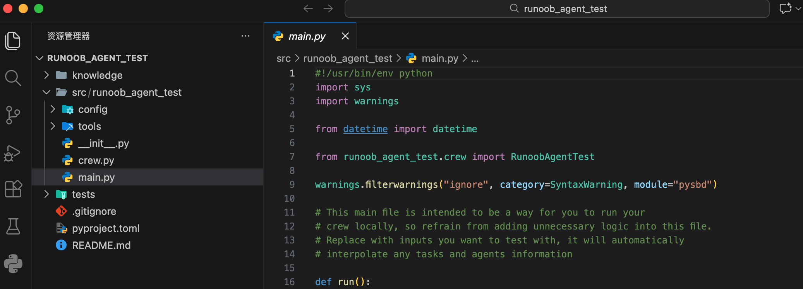

CrewAI: creación de agentes
CrewAI es un framework de código abierto para la colaboración de múltiples agentes, diseñado específicamente para orquestar y coordinar a varios AI Agents para que trabajen en conjunto.
CrewAI puede descomponer una tarea compleja en múltiples roles, cada uno responsable de una parte, y completarla mediante la colaboración a través de un proceso.
Comparación para entender:
- Un solo Agent: un gran modelo que hace todo de principio a fin
- CrewAI: gerente de producto + ingeniero + analista + editor, cada uno desempeña su función
CrewAI es una herramienta para coordinar, gestionar y estructurar AI Agents; está construida sobre LangChain y Pydantic, y está diseñada para fomentar equipos de agentes con roles, autonomía y colaboración.
- Crew (equipo): un equipo compuesto por múltiples
Agentagentes que forman el grupo de proyecto. - Agent (miembro): los individuos del equipo, cada uno con un claro
role(rol),goal(objetivo) ybackstory(historia de fondo). - Task (tarea): el trabajo específico que el equipo debe realizar. Un
Crewcontiene múltiples tareas secuenciales o paralelasTask, y se asignan a los apropiadosAgent。 - Process (proceso): define el flujo de trabajo del equipo, por ejemplo, si se ejecutan las tareas secuencialmente o a la vez.
En pocas palabras, crewAI proporciona una forma estructurada de definir quién (Agent), bajo qué proceso (Process), completa qué tareas (Task), y finalmente logra los objetivos del equipo.
El siguiente diagrama de flujo muestra claramente cómo trabajan juntos los componentes centrales del framework crewAI:

El proceso comienza definiendo agentes (Agent) con roles y objetivos específicos, y luego se crean las tareas (Task) concretas para ellos.
Luego, estos agentes y sus tareas se organizan en un equipo (Crew), y se elige un proceso (Process) para que trabajen juntos, como la ejecución secuencial o paralela. Finalmente, el equipo ejecuta todas las tareas siguiendo el proceso establecido y produce el resultado final.
Configuración del entorno e instalación
Antes de comenzar a construir, debemos preparar el entorno de desarrollo.
Prerrequisitos
Requisitos de la versión de Python:
- Debe ser: Python ≥ 3.10 y < 3.14
- Puedes ingresar en la terminal
python --versionpara verificar. Si no se cumple el rango de versión, habrá muchos problemas después; no se recomienda insistir.
CrewAI usaUVpara la gestión de dependencias y paquetes, con un solo propósito:
hacer que los proyectos multi-Agent sean más estables y no se vean abrumados por problemas del entorno.
Referencia del tutorial de introducción a UV:UV: herramienta de gestión de paquetes y entornos de Python。
Clave de API:
crewAI en sí no proporciona modelos de IA; necesita conectarse a grandes modelos de lenguaje como GPT de OpenAI, Claude de Anthropic, etc.
Instalar crewAI
Abre tu terminal o herramienta de línea de comandos y usa el comando pip para instalar el paquete crewAI.
# 正常安装 pip install crewai # 其他依赖 pip install langchain pip install openai # 如果安装慢，可以使用国内镜像安装 pip install crewai -i https://mirrors.aliyun.com/pypi/simple/ pip install langchain -i https://mirrors.aliyun.com/pypi/simple/ pip install openai -i https://mirrors.aliyun.com/pypi/simple/
Si deseas utilizar algunas de las herramientas avanzadas integradas de crewAI (como la búsqueda web), puedes instalar dependencias adicionales:
# 正常安装 pip install 'crewai[tools]' # 如果安装慢，可以使用国内镜像安装 pip install 'crewai[tools]' -i https://mirrors.aliyun.com/pypi/simple/
En China podemos usar el gran modelo DeepSeek para probar; si aún no tienes uno, primero debeshttps://platform.deepseek.com/api_keyscrear una API key.
Referencia de la documentación de API de DeepSeek:https://api-docs.deepseek.com/zh-cn/。
Después de la instalación, crea un nuevo archivo de Python, por ejemplomy_first_crew.py, e importa las bibliotecas necesarias.
El LLM de CrewAI, para modelos de terceros (incluido DeepSeek), debe pasar por LiteLLM a nivel subyacente; antes de usarlo, debemos instalarlo primero:
pip install -U litellm
Ejemplo
from crewai.llm import LLM
# =====================================================
# Configuración de LLM (forma estándar de DeepSeek | LiteLLM)
# =====================================================
llm = LLM(
model="deepseek/deepseek-v4-flash", # Clave: debe incluir el proveedor deepseek, y luego escribir el nombre del modelo deepseek-v4-flash o deepseek-v4-pro
api_key="sk-xxxxx", # Configurar la API key
api_base="https://api.deepseek.com/v1",
temperature=0.7,
)
# =====================================================
# Agents
# =====================================================
researcher = Agent(
role="Investigador técnico",
goal="Buscar materiales técnicos recientes, precisos y verificables, y proporcionar pruebas de código.",
backstory="Experto en analizar problemas técnicos de forma sistemática, enfocado en hechos y reproducibilidad.",
llm=llm,
verbose=True,
allow_delegation=False,
)
writer = Agent(
role="Escritor de blogs técnicos",
goal="Organizar los resultados de la investigación en artículos técnicos adecuados para principiantes.",
backstory="Experto en descomponer conceptos complejos en pasos claros y proporcionar ejemplos completos.",
llm=llm,
verbose=True,
allow_delegation=True,
)
# =====================================================
# Tasks
# =====================================================
research_task = Task(
description=(
"Investigación en profundidad: usar Python para la limpieza automatizada de datos."\n"
"Los puntos clave incluyen: pandas, numpy, valores faltantes, valores duplicados y problemas de formato inconsistente."\n"
"Se deben proporcionar ejemplos de código completos y ejecutables."
),
agent=researcher,
expected_output=(
"Un informe de investigación que contenga clasificación de problemas, código de soluciones y el proceso completo de limpieza."
),
)
write_task = Task(
description=(
"Basado en el informe de investigación, redactar un blog técnico de nivel introductorio."\n"
"Título: «Introducción a la limpieza de datos en Python: di adiós a los datos sucios con pandas»."
),
agent=writer,
context=[research_task],
expected_output="Un blog técnico en Markdown de no menos de 800 caracteres.",
)
# =====================================================
# Crew
# =====================================================
crew = Crew(
agents=[researcher, writer],
tasks=[research_task, write_task],
process=Process.sequential,
verbose=True,
)
# =====================================================
# Run
# =====================================================
if __name__ == "__main__":
result = crew.kickoff()
output = result.raw
with open("python_data_cleaning_blog.md", "w", encoding="utf-8") as f:
f.write(output)
A continuación, comenzará a ejecutar las tareas y mostrará la información relevante:

Una vez completado, escribirá el contenido de salida en el archivo python_data_cleaning_blog.md.
A continuación se explican los atributos relevantes del código.
Atributos clave del LLM (capa de modelo)
| Atributo | Valor de ejemplo | Función | Consecuencia de errores |
|---|---|---|---|
model |
deepseek/deepseek-v4-flash |
Forma estándar de LiteLLM：服务商/模型名 |
Si faltadeepseek/generará directamenteLLM Provider NOT provided |
api_key |
sk-xxxxx |
autenticación del modelo | Si está vacío o es incorrecto, directamente 401 / LLM Failed |
api_base |
https://api.deepseek.com/v1 |
Dirección de la API de DeepSeek | Según la dirección del modelo específico |
temperature |
0.7 |
Controlar la aleatoriedad de la salida | Si es demasiado alta, el contenido se dispersa; si es demasiado baja, el texto se vuelve rígido. |
Atributos clave del Agent (agente)
| Atributo | Función | Esencia |
|---|---|---|
role |
La "etiqueta de identidad" del Agent | Se escribe en el system prompt |
goal |
El objetivo central del Agent actual | Determina la dirección de las respuestas |
backstory |
Restricciones de comportamiento y estilo | Estabiliza la calidad de la salida |
llm |
Qué modelo usar | Debe vincularse explícitamente |
verbose |
Imprime el proceso de ejecución | Solo afecta los logs |
allow_delegation |
Si se permite delegar tareas | Muy fácil de cometer errores |
researcher (investigador)
| Atributo | 值 | Intención de diseño |
|---|---|---|
allow_delegation |
False |
Evitar la división infinita de tareas |
goal |
Buscar información + proporcionar código | La salida es la "materia prima" |
writer (escritor)
| Atributo | 值 | Riesgo |
|---|---|---|
allow_delegation |
True |
Puede activar delegate e investigar de nuevo |
context |
[research_task] |
Ya tiene la entrada, en realidad no necesita delegar de nuevo |
Conclusión
En un pipeline secuencial, el Agent de escrituradebe desactivar delegation, de lo contrario es fácil que la segunda delegación falle.
Atributos clave de Task (tarea)
Campos comunes de Task:
| Atributo | Función | Punto clave |
|---|---|---|
description |
Texto de la tarea realmente enviado al LLM | Cuanto más específico, más estable |
agent |
Quién lo ejecuta | Debe ser único |
expected_output |
Restricciones del resultado | No es obligatorio, pero muy recomendado |
context |
Tareas upstream de las que depende | Núcleo de ejecución secuencial |
research_task:
| Atributo | Descripción |
|---|---|
agent=researcher |
Vincular al investigador |
无 context |
Tarea de la primera fase |
| Salida | Contenido de investigación estructurado |
write_task:
| Atributo | Descripción |
|---|---|
context=[research_task] |
Leer obligatoriamente los resultados de la investigación |
agent=writer |
Solo organizar y redactar |
| Salida | Texto final en Markdown |
Atributos clave de Crew (ejecutor)
| Atributo | Valor de ejemplo | Función | Consecuencias de errores |
|---|---|---|---|
agents |
[researcher, writer] |
Todos los Agent disponibles | Si falta uno, se produce un error directamente |
tasks |
[research_task, write_task] |
Cola de ejecución | Orden según la lista |
process |
Process.sequential |
Estrategia de ejecución | La ejecución en paralelo altera las dependencias |
verbose |
True |
Interruptor de registro | Solo puede ser bool |
kickoff() y la estructura de salida
| Expresión | Tipo | Uso |
|---|---|---|
crew.kickoff() |
CrewOutput |
Contenedor de resultados de ejecución |
result.raw |
str |
Salida de texto final |
result.tasks_output |
list/dict | Salida de cada Task |
result.token_usage |
dict | Información estadística |
El comando crewai
Podemos usarcrewaiComando para generar la estructura completa del proyecto:
crewai create crew <项目名>
Por ejemplo, si creamos un proyecto runoob-agent-test, ejecutamos el siguiente comando:
crewai create crew runoob-agent-test
A continuación aparece lo siguiente, primero podemos elegir el proveedor del modelo grande:
Creating folder runoob_agent_test... Cache expired or not found. Fetching provider data from the web... Downloading [####################################] 1102019/56339 Select a provider to set up: 1. openai 2. anthropic 3. gemini 4. nvidia_nim 5. groq 6. huggingface 7. ollama 8. watson 9. bedrock 10. azure 11. cerebras 12. sambanova 13. other q. Quit
En este capítulo elegiremos DeepSeek: primero ingrese 13 para seleccionar 'other', luego puede desplazarse con el mouse para ver que DeepSeek está en 23, ingrese el número 23 y listo:

Si tiene una API key de otros modelos, selecciónela según el número de serie.
Al finalizar, puede ver el directorio generado de la siguiente manera:

Explicación de la estructura del proyecto:
my_project/
├── .env # 环境变量（API Key）
├── pyproject.toml # 项目依赖声明
├── README.md
└── src/
└── my_project/
├── main.py # 程序入口
├── crew.py # Crew 与 Agent 的核心逻辑
├── tools/ # 自定义工具
└── config/
├── agents.yaml # Agent 定义
└── tasks.yaml # Task 定义
Ejecutar tu Crew
Ingrese al directorio raíz del proyecto:
cd my_project
Fijar e instalar las dependencias:
crewai install
Ejecute:
crewai run
O directamente:
python src/my_project/main.py
Configurar la clave de API
Por seguridad, no se recomienda escribir la API Key directamente en el código; podemos configurarla como variable de entorno.
Configurar en el código (solo para pruebas)：
import os os.environ["OPENAI_API_KEY"] = "你的-openai-api-key-here"
Forma recomendada: usar.envarchivo
En el directorio raíz del proyecto, cree un archivo llamado.envel archivo.
Escriba en el archivo:OPENAI_API_KEY=你的-openai-api-key-here
En el código Python, usepython-dotenvel paquete para cargarlo.
Comando de instalación:
pip install python-dotenv
A continuación, cárguelo en el código:
from dotenv import load_dotenv load_dotenv() # 这会自动加载 .env 文件中的变量 # 现在 os.environ["OPENAI_API_KEY"] 就已经有了值
Componentes principales: detalle y práctica
Ahora, como si formáramos una empresa, creemos paso a paso nuestro equipo de IA. Simularemos un equipo de creación de blogs técnicos.
Primer paso: definir el agente (Agent)
AgentEs un miembro de tu equipo. Al crearlo, debes definir varios atributos clave:
| Parámetro | Descripción | Ejemplo |
|---|---|---|
| role | El rol o cargo del agente. | 资深技术作家 |
| goal | El objetivo final del agente. | 创作深入浅出、实用的技术教程 |
| backstory | La historia de fondo del rol, utilizada para moldear su comportamiento y tono. | 你是一位拥有10年全栈开发经验的开发者，热爱分享，擅长将复杂概念简单化。 |
| llm | Especifica el modelo de lenguaje grande que usará el agente. | ChatOpenAI(model="gpt-4", temperature=0.7) |
| verbose | Configúrelo comoTrueCuando esté configurado, se mostrará el proceso de razonamiento detallado del agente. |
True(Muy útil para depuración) |
| allow_delegation | Si se permite a este agente delegar tareas a otros agentes. | True |
Creemos dos agentes: uninvestigadory unescritor。
Ejemplo
llm = ChatOpenAI(model="gpt-3.5-turbo", temperature=0.7)
# Crear agente investigador
researcher = Agent(
role='Investigador técnico',
goal='Busca la información técnica más reciente, precisa y relevante sobre el tema asignado.',
backstory='Eres un analista técnico dedicado y riguroso, experto en extraer los puntos clave de grandes volúmenes de información y verificar la confiabilidad de sus fuentes.',
llm=llm, # Usar el modelo definido anteriormente
verbose=True, # Mostrar registros detallados
allow_delegation=False # El investigador no necesita delegar tareas
)
# Crear agente escritor
writer = Agent(
role='Escritor de blogs técnicos',
goal='Redacta artículos de blog técnico estructurados, interesantes y con ejemplos de código completos, basados en los materiales proporcionados por el investigador.',
backstory='Eres un bloguero técnico muy popular, con un estilo cercano y lógica rigurosa; eres especialmente hábil para explicar conceptos complejos mediante metáforas y ejemplos.',
llm=llm,
verbose=True,
allow_delegation=True # Si el escritor lo considera necesario, puede delegar tareas (por ejemplo, pedir al investigador que complete información)
)
Segundo paso: crear la tarea (Task)
TaskSon elementos de trabajo concretos que deben asignarse aAgentpara completar. Los atributos clave incluyen:
| Parámetro | Descripción | Ejemplo |
|---|---|---|
| description | Descripción clara de la tarea. | 研究 "Python异步编程asyncio" 在 2023 年后的核心应用场景和最佳实践。 |
| agent | Responsable de ejecutar esta tareaAgentobjeto. |
researcher |
| expected_output | Descripción detallada de los entregables de la tarea. | 一份结构化的研究报告，包含概述、3-4个核心应用场景、2-3个代码片段示例以及总结。 |
Crearemos una tarea para el investigador y otra para el escritor.
Ejemplo
research_task = Task(
description=(
"Realizar una investigación exhaustiva sobre el tema 'Automatización de limpieza de datos con Python'."\n"
"Centrarse en los usos más recientes de las bibliotecas pandas y numpy (después de 2023), los problemas comunes de datos sucios (como valores faltantes, duplicados, formatos inconsistentes) y flujos de limpieza eficientes."\n"
"Proporcione fragmentos de código concretos para ilustrar cada paso."
),
agent=researcher, # Esta tarea se asigna al investigador
expected_output=(
"Un informe de investigación completo, con el siguiente formato:"\n"
"1. Resumen del tema"\n"
"2. Clasificación de problemas comunes de datos (al menos 3 categorías)"\n"
"3. Soluciones de pandas/numpy para cada categoría de problemas (con fragmentos de código)"\n"
"4. Un ejemplo completo de flujo de limpieza de extremo a extremo"\n"
"5. Resumen y recomendaciones"
)
)
# Crear tarea de escritura
write_task = Task(
description=(
"Utilizando el informe de investigación proporcionado por el investigador, escribir un artículo de blog técnico orientado a principiantes."\n"
"El título del artículo es: 'Introducción a la limpieza de datos en Python: despídete de los datos sucios con pandas'."\n"
"Requisitos del artículo: lenguaje claro y fácil de entender, lógica progresiva, incluir todos los fragmentos de código clave proporcionados por el investigador y añadir comentarios detallados."\n"
"Finalmente, proporcionar un ejemplo completo y ejecutable que demuestre todo el proceso de limpieza de un conjunto de datos simulado."
),
agent=writer, # Esta tarea se asigna al escritor
expected_output=(
"Un artículo de blog en formato Markdown de al menos 800 palabras."\n"
"Incluye introducción, cuerpo (dividido en secciones), bloques de código y resumen."\n"
"Al final del artículo debe incluirse un script de Python completo que contenga datos simulados y código de limpieza."
),
# ¡El parámetro context es muy importante! Especifica las dependencias de esta tarea, es decir, primero debe completarse research_task
context=[research_task]
)
Nota write_taskencontext=[research_task], esto establece una dependencia entre tareas; significa que el escritor debe esperar a que el investigador complete su tarea antes de empezar.
Tercer paso: crear el equipo y configurar el proceso (Crew y Process)
Ahora,Agent 和 Taskensambla enCrew, y define su trabajoProcess。
Ejemplo
blog_crew = Crew(
agents=[researcher, writer], # Qué miembros componen el equipo
tasks=[research_task, write_task], # Qué tareas tiene el equipo
process=Process.sequential, # Tipo de flujo: ejecución secuencial. El investigador termina y luego el escritor.
verbose=2 # Configurar el nivel de detalle de los registros durante la ejecución del equipo (0=silencioso, 1=básico, 2=detallado)
)
crewAI admite principalmente dos flujos:
Process.sequential: Las tareas se ejecutan secuencialmente en el orden de la lista. Adecuado para flujos de trabajo en cadena con dependencias estrictas.Process.hierarchical: Junto con un agente administrador (Manager), que coordina y asigna tareas. Adecuado para escenarios de colaboración más complejos y dinámicos.
Cuarto paso: ejecutar las tareas y obtener resultados
¡Todo listo, pon en marcha tu equipo de IA!
Ejemplo
result = blog_crew.kickoff()
# Imprimir el resultado final
print("###################### Resultado final ######################")
print(result)
Ejecute su script de Python (python my_first_crew.py). Dado que configuramosverbose=True 和 verbose=2, verá en la terminal el proceso de razonamiento de cada Agent y los registros de ejecución de tareas; finalmente verá el artículo de blog generado.
Técnicas avanzadas: equipar al Agent con herramientas (Tools)
crewAI permite queAgentllamen a herramientas externasTool, como buscar en la web, consultar bases de datos, realizar cálculos, etc.
El siguiente ejemplo equipa al investigador conBúsqueda web和CálculoHerramientas:
Ejemplo
# Inicializar herramientas
# Nota: SerperDevTool requiere una API Key separada. Regístrese en https://serper.dev/ para obtenerla
search_tool = SerperDevTool(serper_api_key="tu-serper-api-key")
calc_tool = CalculatorTool()
# Crear un investigador equipado con herramientas
advanced_researcher = Agent(
role='Investigador técnico avanzado',
goal='Buscar las últimas novedades tecnológicas y realizar análisis cuantitativos',
backstory='No solo eres bueno encontrando información, sino que también puedes realizar cálculos y comparaciones simples con los datos.',
tools=[search_tool, calc_tool], # Asignar la lista de herramientas al agente
llm=llm,
verbose=True
)
# Crear una tarea que use las herramientas
analysis_task = Task(
description=(
"Busca y compara el crecimiento de Stars de 'FastAPI' y 'Django' en GitHub durante el último año.\n"
"Calcula la tasa de crecimiento de ambos y analiza las posibles causas."
),
agent=advanced_researcher,
expected_output="Un informe breve que incluya datos específicos, el proceso de cálculo y el análisis de las causas."
)
Haz clic para compartir notas
<p style="font-size:14px;">¡La nota debe ser una extensión del contenido de este artículo!</p><br> <p style="font-size:12px;"><a href="../tougao.html" target="_blank">Envío de artículos, haz clic aquí</a></p> <p style="font-size:14px;"><a href="../w3cnote/runoob-user-test-intro.html" target="_blank">Cómo obtener el código de invitación de registro</a></p> <h3 class="text-muted"><i class="fa fa-info-circle" aria-hidden="true"></i> Antes de compartir notas, debes <a href=";.html" class="runoob-pop">iniciar sesión</a>!</h3> <p><a href="../w3cnote/runoob-user-test-intro.html" target="_blank">Cómo obtener el código de invitación de registro</a></p>